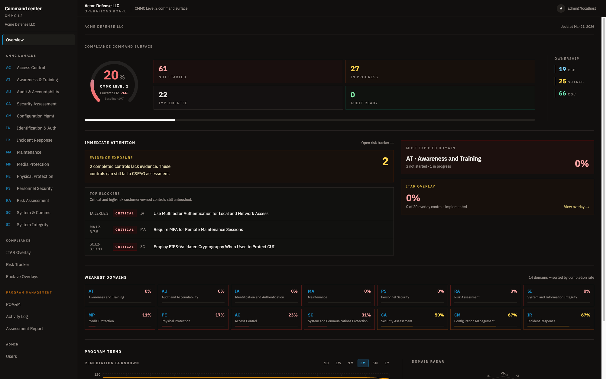
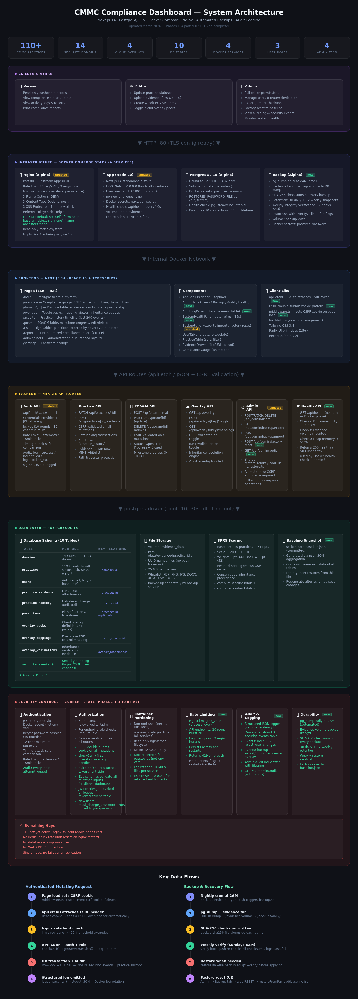

A self-hosted dashboard for defense contractors tracking CMMC Level 2 and ITAR posture. Real-time SPRS scoring, full POA&M lifecycle, evidence management — all data stays on your machine.

Overview — SPRS score, domain health, burndown chart, critical practices
Capabilities
Security
A compliance tool that isn't itself secure undermines the program it tracks. Every layer reviewed against OWASP Top 10.

Everything runs in Docker Compose on a single machine. No vendor accounts, no SaaS billing, no data leaving your network.
One script handles secrets generation, database seeding, and first-run setup. Updates are a single command — migrations run automatically on startup.